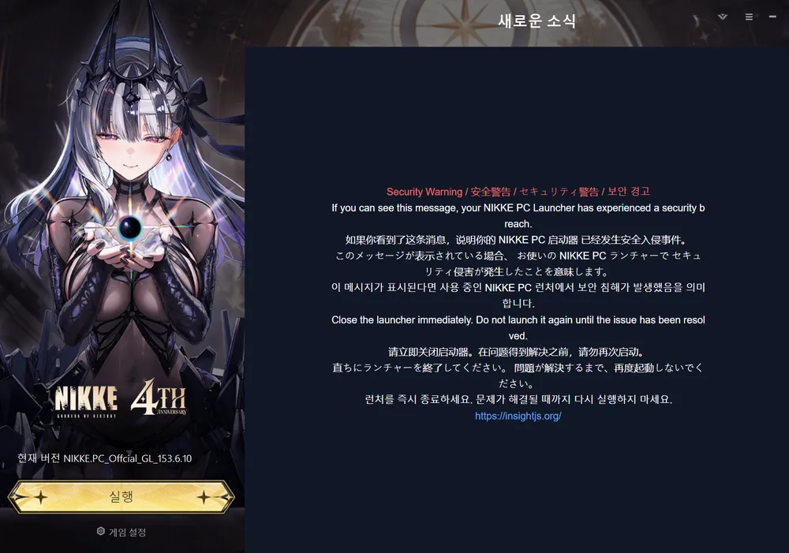

4주년인데 PC 클라 해킹되서 유저들 악성코드 먹고 강제 포맷...

4주년인데 PC 클라 해킹되서 유저들 악성코드 먹고 강제 포맷...
핵사태가 끝나니까 해킹사태가 터진다고ㅋㅋㅋㅋㅋㅋ
씨발
유저를 침식 시키는 이벤트
문구 살벌하네 ㄷㄷ
문제가 해결될때까지 실행하지 마세요
저거 해킹당한걸알리려고 다른유저가 해킹당한사람들 알수있게 해킹당한사람들한테 저 화면이 뜨게 해킹한거임 ㅋㅋㅋㅋㅋ
4주년 진짜 대박났네
死주년이였구나
시작 - 메인 히로인 같은 케릭이 해킹(침식)당함
1주년 - 해킹(침식) 당한 케릭터 의 처절한 분투기
2주년 - 해킹(침식) 당했던 케릭이 자기 평점 되돌리는 이야기
3주년 - 해킹(침식) 근원이랑 싸우는 이야기
4주년 - 해킹(침식) 최종 결전 하는 줄 알았는데 현실 해킹(침식) 발생
5주년 - 해킹 돼서 없음
갑자기 시나리오 작가의 철학이 보이네요
여여여기기기에에에요요요
현실침식 ㅋㅋㅋㅋㅋ


축제인가요
병신게임
마리인의 심정을 이해해라 침식이벤트
주주들도 침식시키고 이제는 유저들도 침식시키는 사실상 4D게임
저거땜에 어제 백업 할거하고 오늘 또 이어서 집가서 포맷하고 윈도 설치하고 프로그램깔고 지랄을 해야함 ㅋㅋㅋㅋ
해결방법 나왔다는데??
아 그래? 그럼 포맷 안해도 불안요소 싹다 날릴수 있음?
그런데 처음 나온게 파일 위변조 마음대로 싹다 할수있는거라 원인을 제거해도 해커가 다른 파일로 감염 이전해놓았으면? 그거도 대처가됨?
걍 포맷하셈 가장 확실한 방법임
그 진단기 있는데
거기서 로그 뭐 뜨면 걍 포멧하시는게 좋을 듯
해커가 뭘 깔아 뒀을지 모르니깐
ㅇㅇ 그냥 이미 다 준비해놔서 그냥 이참에 포멧할려고 ㅋㅋㅋ
나도 포멧했는데 컴퓨터 빨라짐 ㅇㅇ 걍 긍정적으로 생각하자고
그건몰?루 일단 멀웨어 제로 최신판에서 해당 프로세서 때어내는 업뎃 해뒀다고 그걸로 제거는 된다더라
ㅇㅇ 찾아봤는데 일단 그게 근원적인 문제는 뜯어고쳐주는거긴한데 난 찝찝해서 포멧할라고 ㅋㅋㅋ
저 공지도 공식 아니라고 들었음
침식, 뇌세척 체험
엿먹어라 미러 이 외도놈아!
4주년 선물이 강제 포맷이면 5주년엔 뭐가 나오려고 그러냐 ㅋㅋㅋ
스트리머들 포멧하고 스케줄 다 난리났던데 ㅜㅜ
아무래도.. 광고를 많이 뿌려서..ㅋㅋㅋ
마리안 스토리 기념 침식 이벤트